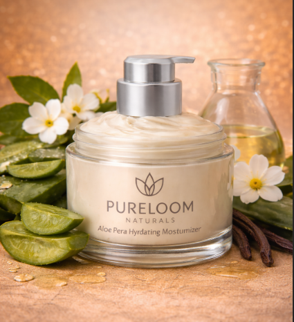

← Back to Products

HandmadeMoisturizer
Honey & Oat Repair Moisturizer
$20.99
A soothing moisturizer enriched with honey and oat extracts to repair damaged skin and lock in moisture. Helps restore skin barrier while providing long-lasting hydration.
Ingredients
Raw honey, oat extract, olive oil, coconut oil, shea butter, glycerin, vitamin E, water.
Highlights
- Deep repair for dry and irritated skin
- Gentle and safe for sensitive skin
- Provides long-lasting hydration
- Free from artificial colors and petroleum